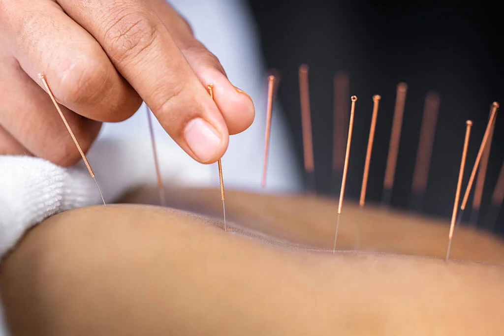
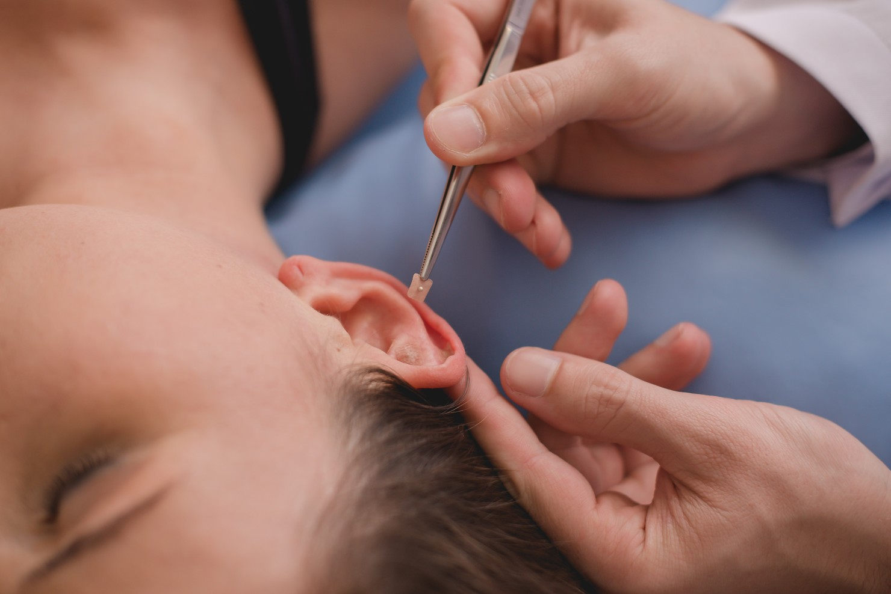
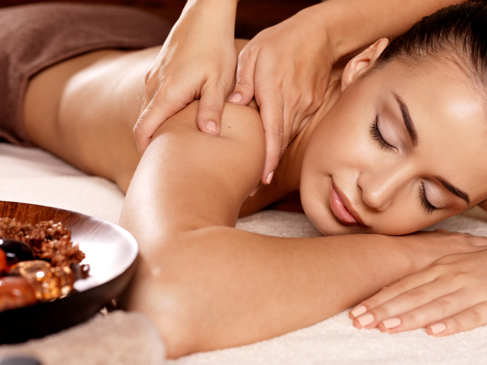
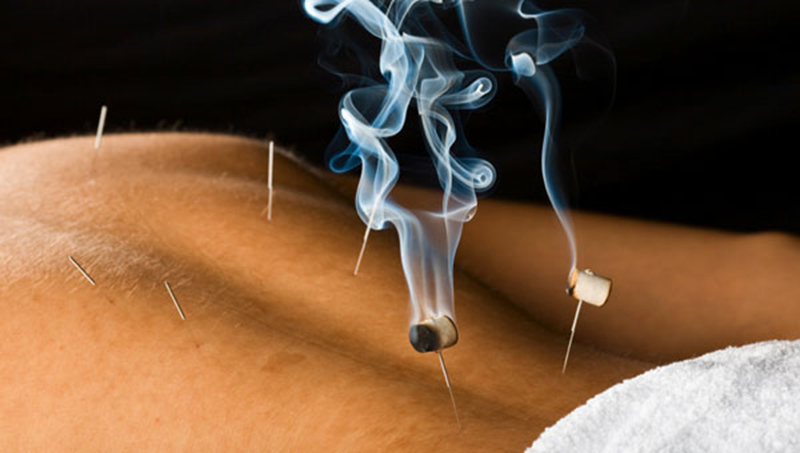
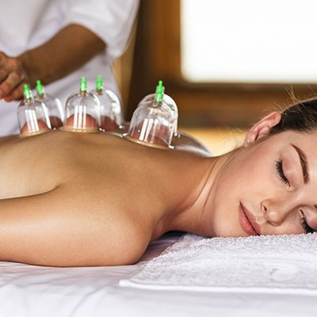

O que temos na DHARMA ZEN para lhe oferecer?

ACUPUNTURA
A acupuntura é a estimulação de locais anatômicos na pele.
O procedimento mais adotado no mundo atual é a inserção
na pele de agulhas de metal descartáveis muito finas e sólidas,
manipulados manualmente ou por estímulos elétricos. de acordo com
Tradição chinesa, a técnica é capaz de ajustar canais
fontes de energia do corpo, chamadas de meridianos em acupuntura, segundo
o equilíbrio de yin e yang. A acupuntura é reconhecida por
a Organização Mundial de Saúde como uma técnica que previne
e tratar centenas de doenças.
FITOTERAPIA CHINESA
A fitoterapia chinesa é uma vertente da milenar medicina chinesa e que tem como objetivo prevenir e tratar
centenas de enfermidades através de ervas chinesas que são devidamente transformadas em cápsulas, grânulos
ou xaropes em laboratórios especializados no Brasil. A fitoterapia na China é muito mais procurada pela
população para tratamentos do que a acupuntura por exemplo.

AURICULOTERAPIA
A auriculoterapia é uma terapia que consiste na estimulação
com sementes de mostarda em pontos específicos da orelha para
aliviar a dor ou tratar vários problemas físicos ou psicológicos,
como: ansiedade, enxaqueca, obesidade ou contraturas. Além da
A auriculoterapia ajuda a diagnosticar e prevenir algumas
doenças através da observação de pontos específicos
da orelha que estão alterados.

MASSAGEM RELAXANTE
Com movimentos leves, a massagem relaxante é uma excelente
alternativa para o tratamento de dores musculares. causado
geralmente devido ao estresse, problemas de postura ou mesmo
movimentos repetitivos, esses hábitos são prejudiciais, dando
origem a diversas doenças. Portanto, é uma ferramenta
que promove bem-estar, aliviando desconfortos nas regiões
mais afetados.

MOXABUSTÃO
Basicamente a moxabustão é uma técnica não invasiva que utiliza o
calor gerado pela queima da erva Artemísia no tratamento de dores
musculares, induzindo ao relaxamento , diminuição da rigidez
muscular e provocando um aumento local da circulação sanguínea. A
moxabustão também causa efeitos positivos no sistema imunológico.

VENTOSA
Procedimento em que a sucção é usada em uma área específica
ou ponto de acupuntura, com o objetivo de atrair energia para o local
ou movê-lo, desbloqueando o fluxo de energia no
Meridianos.